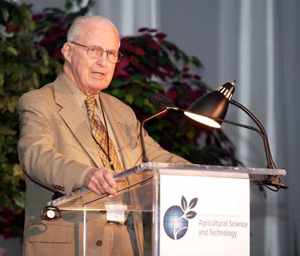

Dr. Norman Borlaug

Norman Borlaug enseña a un grupo de jóvenes aprendices en el campo en Sonora, México. (Foto: CIMMYT)
Descripción
 Borlaug era bisnieto de noruegos emigrantes a Estados Unidos. Ole Olson Dybevig y Solveig Thomasdotter Rinde, de Leikanger, Noruega, emigraron a Dane, Wisconsin, en 1854. Dos de sus hijos: Ole Olson Borlaug y Nels Olson Borlaug (abuelo de Norman), se establecieron en la "Immanuel Norwegian Evangelical Lutheran Congregation" en la pequeña comunidad noruega de Saude, cerca de Cresco, Iowa, en 1889.910 Él era el mayor de cuatro hijos; sus tres hermanas más jóvenes eran Palma Lillian (Behrens; 1916–2004), Charlotte (Culbert; 1919-2012) y Helen (1921–1921) — de pequeños agricultores: Henry Oliver (1889–1971) y Clara Vaala (1888–1972) en la granja de sus abuelos en Saude en 1914. Desde los siete a los nueve años, trabaja en las 43 ha en la granja familiar al oeste de Protivin, Iowa, pescando, cazando, y cultivando maíz, avena, pasto timote, cuidando el ganado, cerdos y pollos. Cursó estudios primarios y secundarios en su pueblo. Hoy, esa escuela primaria, construida en 1865, es gerenciada por la "Norman Borlaug Heritage Foundation" como parte del "Proyecto Legado Borlaug".11 Luego ingresó en la Universidad de Minnesota, durante la Gran Depresión. Allí costeó su educación desempeñando diversos trabajos. Obtuvo su diplomatura en ciencias forestales en 1937. Continuó sus estudios en Minnesota y en 1941 obtuvo su licenciatura y en 1942 su doctorado, ambos en fitopatología y además en genética, bajo la dirección del Dr. E.C. Stackman, uno de los creadores del programa cooperativo entre la Secretaría de Agricultura mexicana y la Fundación Rockefeller (la antigua Oficina de Asuntos Especiales).
Linea de Tiempo
- 1914 - Nace en Cresco, Iowa
- 1933 - Deja la granja de su familia para asistir a la Universidad de Minnesota, gracias a un programa de la era de la Depresión conocido como "Administración Nacional de la Juventud"
- 1935 - Tiene que dejar la escuela y ahorrar más dinero. Trabaja en el Cuerpo de Conservación Civil, ayudando a los estadounidenses hambrientos. "Vi cómo la comida los cambiaba", dijo. "Todo esto me dejó cicatrices".
- 1937 - Termina la universidad y acepta un trabajo en el Servicio Forestal de EE. UU.
- 1938 - Se casa con su esposa durante 69 años, Margret Gibson. Es despedido debido a los recortes presupuestarios. Inspirado por Elvin Charles Stakman, regresa a estudiar en la escuela con Stakman, quien le enseña cómo cultivar plantas resistentes a las plagas.
- 1941 - Intenta alistarse en el ejército después del ataque a Pearl Harbor, pero es rechazado. En cambio, los militares le pidieron a su laboratorio que trabajara con pegamento a prueba de agua, DDT para controlar la malaria, desinfectantes y otras ciencias aplicadas.
- 1942 - Recibe un doctorado. en Genética y Patología Vegetal
- 1944 - Rechaza un aumento salarial del 100 % de Dupont, deja atrás a su esposa embarazada y viaja a México para dirigir un nuevo programa de fitopatología. Durante los siguientes 16 años, su equipo cultiva 6000 cepas diferentes de trigo resistente a enfermedades, incluidas diferentes variedades para cada clima principal de la Tierra.
- 1945 - Descubre una forma de cultivar trigo dos veces cada temporada, duplicando la producción de trigo
- 1953 - cruza una raza de trigo enana, pequeña y robusta, con una raza americana de alto rendimiento, creando una variedad que responde bien a los fertilizantes. Continúa proporcionando el 95% del trigo de México.
- 1962 - Visita Delhi y trae sus cepas de trigo de alto rendimiento al subcontinente indio a tiempo para ayudar a mitigar la hambruna masiva debido a una población en rápido crecimiento
- 1970 - Recibe el Premio Nobel de la Paz
- 1983 - Ayuda a siete países africanos a aumentar drásticamente sus rendimientos de maíz y sorgo
- 1984 - Se convierte en profesor distinguido en la Universidad Texas A&M
- 2005 - Afirma que "tendremos que duplicar el suministro mundial de alimentos para 2050". Sostiene que los cultivos genéticamente modificados son la única forma en que podemos satisfacer la demanda, ya que nos quedamos sin tierra cultivable. Dice que los cultivos transgénicos no son intrínsecamente peligrosos porque "hemos estado modificando genéticamente plantas y animales durante mucho tiempo. Mucho antes de que lo llamáramos ciencia, la gente seleccionaba las mejores razas".
- 2009 - Muere a la edad de 95 años.